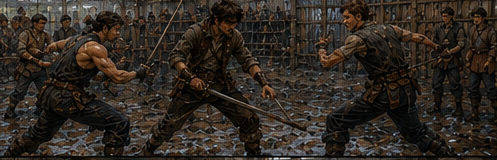
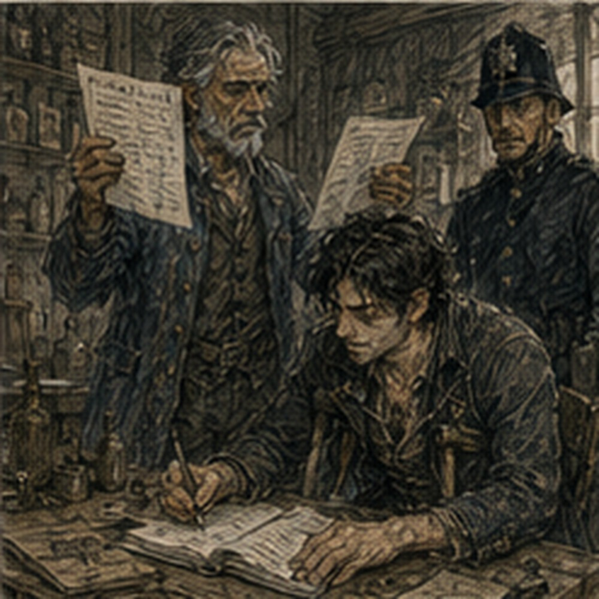

My hands were better. Not good. Better. The right blister had flattened overnight. The left one had become tender in a way that suggested it wanted attention and would resent receiving it. My ribs were quiet until I twisted. My channels were quiet until I used them. Alden arrived before I finished breakfast. Berren arrived after. This told me everything important about both men.
Alden leaned against the doorframe in his red scarf and looked at the bread in my hand.
“You eating?”
“Yes.”
“Good.”
“That sounded like Hessa.”
“Terrifying.”
Berren appeared behind him with a different boot. Not repaired. Different. Older leather, wider toe, ugly enough to be comfortable. He saw me looking.
“My aunt’s.”
I looked at his feet.
“Your aunt has large feet.”
“Uncle’s.”
“Then why say aunt’s?”
“Her house.”
Reasonable. He walked almost normally. Almost.
“Foot?”
“Closed.”
“Pain?”
“Yes.”
“Good.”
He frowned.
“You’re pleased?”
“Pain means you can feel it.”
“That is the worst good news.”
Alden pushed off the frame.
“Guild yard.”
We went. No one asked whether we still wanted to spar. We had already spent too much time arranging it. The Guild practice yard was busy. Dema Rusk had one side occupied by six Bronze adventurers working shield rotations. Two people I did not know were throwing weighted ropes at posts. Someone had broken a practice spear and was pretending not to have.
Alden claimed a narrow strip near the rear wall. Not claimed. Asked. A Guild attendant looked at our weapons, looked at Berren’s foot, and said, “Light.” Alden said, “Light.” Berren said nothing. Good. We used blunted practice swords. My repaired real sword stayed belted at the wall. That mattered more than expected. The practice blade felt wrong. Weight close. Balance not. Grip thicker.
Young hands noticed immediately. Blisters noticed more. I wrapped both palms. Alden watched.
“Rules,” Alden said.
He had thought about them. Good.
“One minute rounds. Clean touch ends exchange, reset immediately. Three exchanges, then switch.”
Berren said, “That is not a round.”
“It is ours,” Alden said.
“No chasing after clean touch,” Alden continued. “No extending after call. No head shots. No hard shots to Greg’s ribs. No low attacks on Berren’s right.”
Berren objected.
“No.”
Alden looked at him.
“It is injured.”
“I can defend it.”
“Not the point.”
“What is the point?”
“Practice tomorrow too.”
Good. Berren disliked it. Accepted. Alden looked at me.
“Barrier?”
“Small only.”
“Use?”
I thought. Hessa had said no Barrier unless I could do it without pressure. Yesterday palm-sized repeated load had produced pressure. Coin-sized utility had been clean.
“Coin-sized. One per exchange maximum. If pressure starts, none.”
Berren looked delighted.
“That is terrible.”
“Yes.”
“Good.”
Alden said, “First Greg and Berren.” Of course. We stepped in. Berren smiled. I did not. My body did. Heart faster. Weight lighter. Hands alive. The yard narrowed. Not mentally. Physically. Distance. Feet. Shoulders. Blade.
Berren’s right foot was protected, but not hidden. He had changed his stance since the bakery. Less weight on it. More square through the hips. That created other problems. Potential. No. Fight. Alden lifted a hand.
“Go.”
Berren came first. Not reckless. Good. Short step. Blade outside. He wanted me to read the obvious line and give him the inside. I did. Then changed. Too slow. His practice blade touched my shoulder.
“Berren.”
Alden called it. Berren stepped back immediately. Good. No extra flourish. No grin until after. Then grin.
“One.”
“Yes.”
Second exchange. I knew the bait now. He knew I knew. Different fight. He came outside again. I did not give the inside. He kicked my blade. Not with the injured foot. Left. Good. My grip shifted against the blister. Pain. Tiny. Enough. He saw. Changed target. Hand. I retreated.

Young legs got me there. Barely. I put a coin-sized Barrier beside his blade, not against it. The pressure changed the line a fraction. His cut missed my fingers. My practice sword touched his chest.
“Greg.”
Reset. Berren looked at the empty air where the Barrier had been.
“That is disgusting.”
“Thank you.”
Alden said, “Again.” No symptoms. Third. Berren did not attack. Interesting. He waited. He wanted me to build. I did. Bad. Old habits. Control the exchange. Set conditions. He stepped only when I committed. Then turned the entire thing into a close collision. Shoulder. Blade trapped. My ribs said no. I disengaged before contact. He could have followed. Did not. Alden called, “Berren.”
I looked at him.
“That was not a touch.”
“You left.”
Fair. Berren nodded. No argument. Two to one. I wanted another. Alden stepped between us.
“Switch.”
I hated his system. Therefore it was good. Alden and Berren. I moved to the wall. My channels were quiet. Hands less so. Berren reset. Alden’s stance had changed too. Not dramatically. His repaired shoulder was no longer guarded. He held the practice sword loosely. Berren attacked. Alden gave ground. Berren pressed. Old Berren would have chased harder. Current Berren stopped after the second step.
Alden had expected third. I saw it in his hips. Berren saw too. He cut across. Touch. Berren. Alden laughed. Not embarrassed. Actually pleased.
“Again.”
Second exchange. Alden changed immediately. No assumption that Berren would repeat. Good. He took center. Berren tried to angle. Alden touched forearm. One each. Third. Longer. Not because either stalled. Because both stopped giving away first answers. Berren’s foot limited his rightward exit. Alden knew. Did not attack it.
Instead he used the limit to predict where Berren would choose to go. Different. Permission within rules. He drove him left. Berren knew he was being driven. Went anyway. Then dropped his weight and turned the exit into an entry. Bad foot held. Barely.
His blade touched Alden’s side at the same time Alden touched his shoulder. Both stopped. They looked at me. I looked at Alden.
“You’re running this,” I said.
He frowned.
“Both,” Alden said.
Berren said, “Coward.”
“Both,” Alden repeated.
Done. Switch. Me and Alden. This was more dangerous. Not physically. Informationally. He knew me better. I knew him better. That was the problem. Alden smiled.
“Go.”
I waited. He waited. Berren groaned.
“Fight.”
Alden moved. No opening test. Direct. Fast. My body knew the line. My memory knew three counters. My current body could execute one and a half. I chose the half. Mistake. His blade touched my upper arm.
“Fuck.”
Alden stepped back.
“You picked something you can’t do.”
“Yes.”
He knew. Of course. Second exchange. I simplified. No future technique. No clever sequence. Step. Parry. Cut. He was faster. I was earlier. Different advantage. My blade touched his sleeve a fraction before his reached my shoulder. Greg. Maybe. Alden looked at Berren. Berren said, “Greg.” Good. Third. Alden changed rhythm. Slow first. Then fast. I recognized it. He had learned that from someone else.
Not me. Dema? Jorren? His south-farm escort? No idea. Good. I tried to solve it while moving. Bad. He saw my attention leave my feet. His boot hooked mine lightly. Not a trip. Enough. My balance broke. Young body recovered. Almost. His blade touched my chest. Alden. He grinned.
“Face.”
“Fuck you.”
Berren laughed. Switch. We continued. Short rounds worked. Annoyingly well. No one got enough time to settle. Every time I started building a reliable model, the person changed. Then the person came back changed by someone else. Berren learned that my tiny Barrier wanted a prepared angle.
He started making me spend attention on lines I could not profitably redirect. Alden learned that Berren’s restraint had improved enough that baiting overcommitment no longer worked reliably. I learned that Alden had developed a delayed second tempo I had never taught him. Then I learned it was not stable yet. Then he stopped using it. Good. Berren’s foot worsened after the fourth rotation.
Not dramatically. His rightward movement shortened. Alden saw. I saw. Berren saw us see.
“No.”
Alden said, “Last rotation.” Berren opened his mouth. Then closed it.
“Fine.”
That was new. Or maybe not. Maybe I had only known him in situations where he wanted to prove he could continue. Last rotation. Berren and me. My palms hurt. Ribs warm. Channels still quiet. I could cast. I wanted to. Did not. First exchange. He expected magic. I gave him none. Touched wrist. Greg. Second. He expected no magic. Coin-sized Barrier at the edge of his guard.
Tiny. His blade shifted. Not enough. He adapted through it. Touched my shoulder. Berren. Good. Pressure behind eyes. One. Small. There. No more magic. Third. No cast. He did not know I had stopped. That mattered. He kept respecting the possibility. Interesting. I almost used that to build a trap. Then remembered this was a spar. Not a proof. I attacked. He defended.
We collided close. His foot slipped. Not injury. Sweat on packed dirt. I caught his upper arm. He caught mine. Both of us stayed up. Alden called, “Done.” No touch. No winner. Berren looked disappointed for half a second. Then his foot reminded him of reality. He sat. I sat too. Alden remained standing. Show-off.
“How was south farms?” I asked.
He blinked. Not expecting that.
“Fine.”
“That is not information.”
“You ask too many questions.”
“Yes.”
He drank water.
“Two wagons. Seed grain. One wheel problem. Farmer argued about route. Nothing attacked us.”
“Good.”
“Paid three copper.”
Berren said, “I got four.”
“You got carried home in a cart.”
“Luxury transport.”
Alden looked at his boot.
“You’re bleeding again,” Alden said.
Berren looked down. Small red mark.
“Fuck,” Berren said.
“Lara?”
I asked. He looked at me.
“How do you know her name?”
“Bakery.”
“That was Nara.”
“Your sister is Lara.”
“Yes.”
“Your aunt?”
“Vessa.”
I froze. No. Different Vessa. Probably. City names repeated. Arlo’s Vessa. Berren’s aunt Vessa. Could be same. Do not connect because names.
“How old?”
Berren stared.
“What?”
“Nothing.”
Alden saw my face.
“No.”
“I said nothing.”
“You found a thing.”
“I found a name.”
“Leave it.”
“Yes.”
Berren looked between us.
“What?”
“Nothing,” both of us said.
Good. We rested. No dramatic conclusion. Scores were meaningless because rotations changed. Alden had probably won more exchanges. Berren had surprised both of us. I had used two Barriers total. Second produced mild pressure. Useful. Not good. Useful. My hands had held. Ribs had held. Body tired. Alive. Hessa would approve of stopping. Probably. That was disturbing. Alden left first. He had somewhere to be.
“What?”
I asked.
“Lunch.”
“With?”
He looked at me.
“People.”
Jorren’s answer. Hostile.
“Fine.”
He left. Berren stood carefully.
“I’m going to my aunt’s.”
“Good.”
“Don’t.”
“I said good.”
“That sounded medical.”
“It was social.”
“Worse.”
He limped away. I was alone. Afternoon. Edrin. The Guild annex was already busy when I arrived. Not crisis busy. Paper busy. Two clerks. One constable. A woman arguing about a confiscated charm. The blue door stood open. Edrin was inside. Three dark sacks still occupied the stone table. Not in the same positions.
The Darrowmere sample sat in a shallow ceramic tray under a glass cover. Gray-black fragments. Small. Glass inclusions. Similar. Very similar. My brain wanted yes. That was dangerous. Edrin pointed at a chair.
“Sit.”
“I am not tired.”
“You look tired.”
“I sparred.”
“Sit.”
I sat. She looked at my hands.
“Blisters.”
“Millrace.”
She did not ask. Good. The ink-thumbed clerk from before sat at the side desk. The watch constable was different. No Verran. No Nella. Good. This was not theater. Edrin lifted two sheets.
“Blind comparison.”
I leaned forward.
“No touching.”
“I know.”
“You say that often.”
“Because you say that often.”
“Yes.”
She put the first sheet down.
“Physical comparison first. Darrowmere fragments are kestrin shale.”
There. Connection. Maybe.
“Processed?”
“Some treatment.”
“What kind?”
“Unknown.”
“Same as sinkstone?”
“No.”
Too fast. I stopped. Edrin continued.
“Or not established.”
Better. She pointed to columns.
“Composition overlaps. Base stone matches common kestrin shale within what our assay can distinguish.”
“Common?”
“Very.”
“How common?”
“Road fill in some districts. Cheap furnace lining. Packing. Drainage beds. Low-grade building mix.”
That widened everything. Good.
“Glass inclusions?”
“Not the same.”
I leaned closer. The seized sinkstone pellets had pale veins and porosity. The Darrowmere fragments had glassy specks.
“Different process?”
“Maybe. Different heat. Different additive. Different source stone. Different contamination.”
“Mana behavior?”
She looked at me. There. Main result.
“Different.”
I waited.
“Completely?”
“No.”
Of course. Edrin placed the second sheet.
“Both suppress a low test line at close range.”
My pulse increased.
“Amount?”
“Sinkstone more.”
“How much?”
“Depends on batch.”
“Darrowmere?”
“Weak.”
“Residual charge?”
“Yes.”
“Duration?”
“Darrowmere fragments retained measurable residue from test exposure for twenty-three minutes.”
“Sinkstone?”
“Hours in some samples.”
“Same signature?”
“That question is too broad.”
Good.
“Same absorption behavior?”
“Not enough to say.”
“Release?”
“Darrowmere sample showed no measurable release under the conditions we used.”
“Conditions?”
“Heat, pressure, fresh mana line, dead line, salt wash.”
Good tests.
“Sinkstone?”
“Variable release under two conditions.”
“Which?”
“No.”
I stared.
“Why?”
“Because you do not need every detail.”
“I disagree.”
“Yes.”
The clerk did not look up. Probably had heard this before. I looked at the fragments. Kestrin shale. Processed somehow. Weak suppression. Residual retention. Not same glass. Not same behavior. Could still be related. Could be unrelated. Could be same broad material family with different treatment.
Could be road debris that happened to be mildly mana-reactive because kestrin shale did that naturally.
“Untreated control?”
Edrin nodded. Good.
“What did it do?”
“Very weak suppression. No retained residue above our threshold after three minutes.”
So Darrowmere fragments were not simply raw stone. Probably.

“What treatment evidence?”
“Heat alteration. Surface vitrification. Trace salts.”
“Which salts?”
“Mixed.”
“Intentional?”
“Unknown.”
“Could road exposure do it?”
“Some.”
“Could wagon fire?”
“Some.”
“Could processing?”
“Yes.”
“Could creature biology?”
She paused.
“Unknown.”
Important.
“Was fragment embedded?”
“Recovered from wound cavity.”
“I know. Where in cavity?”
“Between damaged tissue and a broken rib.”
“Could have entered with weapon?”
“No weapon fragment recovered from that wound.”
“Could have entered when body hit road?”
“Yes.”
“Could creature have swallowed it?”
“Wrong location for that theory.”
“Could it have been carried in tissue before wound?”
“Yes.”
“Evidence?”
“No.”
Good. No connection. Not yet. My brain hated that. It wanted shape. Silas Marris sacks. Processed mineral. Darrowmere fragments. Creatures. Watcher. Road. No. Separate until proven. Edrin watched me.
“What?”
I asked.
“You stopped.”
“Yes.”
“Why?”
“Because I can make them related very easily.”
“And?”
“That would not make them related.”
She nodded. No praise. Good.
“What do you think?”
I asked. Edrin leaned back.
“Same cheap stone family.”
“That is all?”
“No. Both altered enough to behave differently from untreated control.”
“Same alteration?”
“No evidence.”
“Same maker?”
“No evidence.”
“Same purpose?”
“No evidence.”
“Same supply chain?”
“No evidence.”
“Darrowmere connection to Silas Marris?”
“No evidence.”
Each answer hurt in a satisfying way. Clean.
“What do you know?”
She pointed at the sheets.
“That.”
I smiled. She frowned.
“What?”
“Nothing.”
“You are pleased.”
“Yes.”
“Why?”
“The result is useful.”
“It is inconclusive.”
“Those are not opposites.”
Edrin looked at me for a moment. Then nodded once. Maybe. The clerk brought another tray. Three small pieces of untreated kestrin shale. Ugly gray stone. Rubbish. I looked. Future memory shifted. Cheap buffers always lie about what they keep. Still no mechanism. But the base material itself was mildly reactive. Present people knew that. Processing amplified or changed it. Different processes could produce different families of behavior.
That mattered without connecting Darrowmere to Silas Marris.
“Who processes kestrin shale in the city?”
Edrin said, “Several people.” My attention sharpened.
“There.”
“What?”
“Face.”
Fuck.
“Who?”
“Kilns. Ward-material suppliers. Cheap artificing shops. Some metalworkers use treated shale as packing. Glassmakers sometimes buy specific grades.”
“Names?”
“No.”
“Why?”
“Because I am not giving you a scavenger hunt.”
“I can find them.”
“Yes.”
“Then why not save time?”
“Because this is Guild evidence.”
Right.
“Can I investigate independently?”
“You can ask legal questions in public places.”
“That sounds like permission.”
“It is a description of law.”
“Better.”
She slid one sheet away.
“Do not represent yourself as Guild.”
“I would not.”
“Do not imply access to seized evidence.”
“I would not.”
“Do not tell people Darrowmere creatures contain sinkstone.”
“I definitely would not.”
“Good.”
“Because we do not know that.”
“Yes.”
“Can I say processed kestrin shale exists?”
“That is public knowledge.”
“Can I say it retains mana?”
“Some treated forms. Also public to people in the trade.”
Interesting. Less secret than Greg had made it. Future significance had inflated present novelty. Again.
“What is actually unusual about the seized material?”
Edrin looked at the sacks.
“Consistency.”
I waited.
“Across pellets?”
“Yes. Within each sack, behavior is unusually narrow for cheap processed shale.”
Arlo. Too good. No. Different field. But manufacturing consistency mattered.
“Batch control.”
“Probably.”
“Professional process.”
“Probably.”
“Expensive?”
“Not necessarily.”
“Skilled?”
“Yes.”
There. That was the thread. Not monsters. Not conspiracy. Manufacturing. Someone had taught rubbish to remember magic. And done it consistently.
“What about the three sacks differing?”
“Still true.”
“Different exposure history?”
“Possible.”
“Different batch treatment?”
“Possible.”
“Different storage?”
“Possible.”
“Can you distinguish?”
“Not yet.”
I wanted to help. I wanted to design tests. I wanted to ask Arlo whether he knew anyone processing kestrin shale. I wanted Antonius’s Silas Marris business contacts. I wanted North Quay records. I wanted Ors. Six directions. Face expanding. Edrin saw.
“Greg.”
“Yes.”
“You do not work here.”
“I know.”
“Good.”
That landed differently now. Not exclusion. Boundary. Also relief. Someone else owned the evidence problem. I could be curious without becoming responsible. Unfamiliar.
“What do you need from me?”
I asked. Edrin considered.
“Nothing today.”
There it was again. Arlo. Nothing. Edrin. Nothing. The city had become alarmingly capable without me.
“Then why summon me?”
“You asked for the comparison.”
“Yes.”
“I told you the result.”
That simple. I sat back. My ribs hurt. Hands hurt. Mild pressure from the morning Barrier had been gone for hours. Berren was probably being bullied by family into resting. Alden was eating lunch with people who were none of my business. Edrin had evidence. Arlo had regulators. Antonius had ledgers. I had no assigned role.
“What happens next?” I asked.
Edrin looked at the tray.
“We test the three seized batches separately under controlled charge.”
“And Darrowmere?”
“Stored.”
“No more tests?”
“Not unless there is a reason.”
That offended my curiosity. It was also correct. The Darrowmere fragment had answered the current question. Same enough to be interesting. Different enough to prove nothing. Stop. I stood. Edrin said, “Greg.” I waited.
“If you learn who is producing unusually consistent sinkstone, tell me.”
There. A role. Small. Legal. Not exclusive.
“Why?”
“Because I want to know.”
I smiled. She pointed at the door.
“Go.”
I went. Outside, afternoon light hit hard after the annex. The city continued. Carts. Bread. A dog barking at a wheel. Someone arguing about onions. I had learned something important. Maybe. Not that Darrowmere connected to Silas Marris. Not that the creatures carried sinkstone. Not that the sacks explained anything east. The opposite, almost. The world had refused to collapse into one answer.
Good. Annoying. Good. I started toward Arlo’s workshop. Then stopped. My hands hurt. Tomorrow’s spar was already today. No. Spar done. Time had moved. I laughed. A passerby looked at me. Reasonable. Arlo could wait until tomorrow. So could the manufacturer. So could Silas Marris. I went to find dinner.